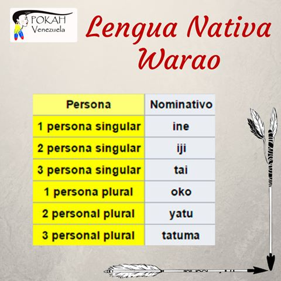

Idioma
Según los últimos datos del Censo Nacional de Venezuela, que corresponden al año 2001, actualmente existen unos 36.000 waraos inscritos. De este total unos 28.000 se declaran waraohablantes mientras que 3000 utilizan el castellano como única forma de comunicación. El warao idioma utilizado principalmente por esta tribu y por mucho criollos de Venezuela.

La warao es una lengua aislada (no presenta rasgos comunes con otras). Se habla en el delta del río Orinoco, en el estado Delta Amacuro, extendiéndose hacia el oeste a los estados de Sucre y Monagas (Venezuela) y hacia el este a Guyana y Surinam. Tiene ligeras variantes dialectales orientales y occidentales.
Para su escritura se utilizan 18 letras: a-b-d-e-h-i-j-k-m-n-o-p-r-s-t-u-w-y. La pronunciación de los cinco sonidos vocálicos son iguales a los del castellano, excepto en algunas variantes regionales donde existen sonidos nasales para ellas. La sílaba tónica natural tiende a ser la penúltima, la que le da una musicalidad grave similar a la del español.